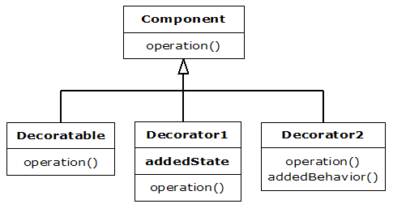
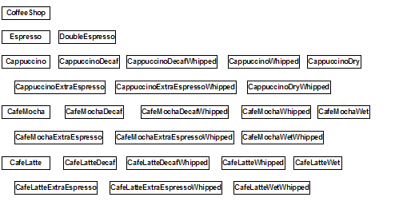

Decorator: Dynamic Type Selection¶
Note
I think we can rewrite this chapter to use Python decorators as implementation (thus the decorators chapter should precede this one).
The use of layered objects to dynamically and transparently add responsibilities to individual objects is referred to as the decorator pattern.
Used when subclassing creates too many (& inflexible) classes
All decorators that wrap around the original object must have the same basic interface
Dynamic proxy/surrogate?
This accounts for the odd inheritance structure
Tradeoff: coding is more complicated when using decorators
Basic Decorator Structure¶
A Coffee Example¶
Consider going down to the local coffee shop, BeanMeUp, for a coffee. There are typically many different drinks on offer – espressos, lattes, teas, iced coffees, hot chocolate to name a few, as well as a number of extras (which cost extra too) such as whipped cream or an extra shot of espresso. You can also make certain changes to your drink at no extra cost, such as asking for decaf coffee instead of regular coffee.
Quite clearly if we are going to model all these drinks and combinations, there will be sizeable class diagrams. So for clarity we will only consider a subset of the coffees: Espresso, Espresso Con Panna, Café Late, Cappuccino and Café Mocha. We’ll include 2 extras - whipped cream (“whipped”) and an extra shot of espresso; and three changes - decaf, steamed milk (“wet”) and foamed milk (“dry”).
Class for Each Combination¶
One solution is to create an individual class for every combination. Each class describes the drink and is responsible for the cost etc. The resulting menu is huge, and a part of the class diagram would look something like this:
The key to using this method is to find the particular combination you want. So, once you’ve found the drink you would like, here is how you would use it, as shown in the CoffeeShop class in the following code:
# decorator/nodecorators/CoffeeShop.py
# Coffee example with no decorators
class Espresso: pass
class DoubleEspresso: pass
class EspressoConPanna: pass
class Cappuccino:
def __init__(self):
self.cost = 1
self.description = "Cappucino"
def getCost(self):
return self.cost
def getDescription(self):
return self.description
class CappuccinoDecaf: pass
class CappuccinoDecafWhipped: pass
class CappuccinoDry: pass
class CappuccinoDryWhipped: pass
class CappuccinoExtraEspresso: pass
class CappuccinoExtraEspressoWhipped: pass
class CappuccinoWhipped: pass
class CafeMocha: pass
class CafeMochaDecaf: pass
class CafeMochaDecafWhipped:
def __init__(self):
self.cost = 1.25
self.description = \
"Cafe Mocha decaf whipped cream"
def getCost(self):
return self.cost
def getDescription(self):
return self.description
class CafeMochaExtraEspresso: pass
class CafeMochaExtraEspressoWhipped: pass
class CafeMochaWet: pass
class CafeMochaWetWhipped: pass
class CafeMochaWhipped: pass
class CafeLatte: pass
class CafeLatteDecaf: pass
class CafeLatteDecafWhipped: pass
class CafeLatteExtraEspresso: pass
class CafeLatteExtraEspressoWhipped: pass
class CafeLatteWet: pass
class CafeLatteWetWhipped: pass
class CafeLatteWhipped: pass
cappuccino = Cappuccino()
print((cappuccino.getDescription() + ": $" +
`cappuccino.getCost()`))
cafeMocha = CafeMochaDecafWhipped()
print((cafeMocha.getDescription()
+ ": $" + `cafeMocha.getCost()`))
And here is the corresponding output:
Cappucino: $1.0 Cafe Mocha decaf whipped cream: $1.25
You can see that creating the particular combination you want is easy, since you are just creating an instance of a class. However, there are a number of problems with this approach. Firstly, the combinations are fixed statically so that any combination a customer may wish to order needs to be created up front. Secondly, the resulting menu is so huge that finding your particular combination is difficult and time consuming.
The Decorator Approach¶
Another approach would be to break the drinks down into the various components such as espresso and foamed milk, and then let the customer combine the components to describe a particular coffee.
In order to do this programmatically, we use the Decorator pattern. A Decorator adds responsibility to a component by wrapping it, but the Decorator conforms to the interface of the component it encloses, so the wrapping is transparent. Decorators can also be nested without the loss of this transparency.

Methods invoked on the Decorator can in turn invoke methods in the component, and can of course perform processing before or after the invocation.
So if we added getTotalCost() and getDescription() methods to the DrinkComponent interface, an Espresso looks like this:
# decorator/alldecorators/EspressoDecorator.py
class Espresso(Decorator):
cost = 0.75f
description = " espresso"
def __init__(DrinkComponent):
Decorator.__init__(self, component)
def getTotalCost(self):
return self.component.getTotalCost() + cost
def getDescription(self):
return self.component.getDescription() +
description
You combine the components to create a drink as follows, as shown in the code below:
# decorator/alldecorators/CoffeeShop.py
# Coffee example using decorators
class DrinkComponent:
def getDescription(self):
return self.__class__.__name__
def getTotalCost(self):
return self.__class__.cost
class Mug(DrinkComponent):
cost = 0.0
class Decorator(DrinkComponent):
def __init__(self, drinkComponent):
self.component = drinkComponent
def getTotalCost(self):
return self.component.getTotalCost() + \
DrinkComponent.getTotalCost(self)
def getDescription(self):
return self.component.getDescription() + \
' ' + DrinkComponent.getDescription(self)
class Espresso(Decorator):
cost = 0.75
def __init__(self, drinkComponent):
Decorator.__init__(self, drinkComponent)
class Decaf(Decorator):
cost = 0.0
def __init__(self, drinkComponent):
Decorator.__init__(self, drinkComponent)
class FoamedMilk(Decorator):
cost = 0.25
def __init__(self, drinkComponent):
Decorator.__init__(self, drinkComponent)
class SteamedMilk(Decorator):
cost = 0.25
def __init__(self, drinkComponent):
Decorator.__init__(self, drinkComponent)
class Whipped(Decorator):
cost = 0.25
def __init__(self, drinkComponent):
Decorator.__init__(self, drinkComponent)
class Chocolate(Decorator):
cost = 0.25
def __init__(self, drinkComponent):
Decorator.__init__(self, drinkComponent)
cappuccino = Espresso(FoamedMilk(Mug()))
print(cappuccino.getDescription().strip() + \)
": $" + `cappuccino.getTotalCost()`
cafeMocha = Espresso(SteamedMilk(Chocolate(
Whipped(Decaf(Mug())))))
print(cafeMocha.getDescription().strip() + \)
": $" + `cafeMocha.getTotalCost()`
This approach would certainly provide the most flexibility and the smallest menu. You have a small number of components to choose from, but assembling the description of the coffee then becomes rather arduous.
If you want to describe a plain cappuccino, you create it with:
plainCap = Espresso(FoamedMilk(Mug()))
Creating a decaf Cafe Mocha with whipped cream requires an even longer description.
Compromise¶
The previous approach takes too long to describe a coffee. There will also be certain combinations that you will describe regularly, and it would be convenient to have a quick way of describing them.
The 3rd approach is a mixture of the first 2 approaches, and combines flexibility with ease of use. This compromise is achieved by creating a reasonably sized menu of basic selections, which would often work exactly as they are, but if you wanted to decorate them (whipped cream, decaf etc.) then you would use decorators to make the modifications. This is the type of menu you are presented with in most coffee shops.

Here is how to create a basic selection, as well as a decorated selection:
# decorator/compromise/CoffeeShop.py
# Coffee example with a compromise of basic
# combinations and decorators
class DrinkComponent:
def getDescription(self):
return self.__class__.__name__
def getTotalCost(self):
return self.__class__.cost
class Espresso(DrinkComponent):
cost = 0.75
class EspressoConPanna(DrinkComponent):
cost = 1.0
class Cappuccino(DrinkComponent):
cost = 1.0
class CafeLatte(DrinkComponent):
cost = 1.0
class CafeMocha(DrinkComponent):
cost = 1.25
class Decorator(DrinkComponent):
def __init__(self, drinkComponent):
self.component = drinkComponent
def getTotalCost(self):
return self.component.getTotalCost() + \
DrinkComponent.getTotalCost(self)
def getDescription(self):
return self.component.getDescription() + \
' ' + DrinkComponent.getDescription(self)
class ExtraEspresso(Decorator):
cost = 0.75
def __init__(self, drinkComponent):
Decorator.__init__(self, drinkComponent)
class Whipped(Decorator):
cost = 0.50
def __init__(self, drinkComponent):
Decorator.__init__(self, drinkComponent)
class Decaf(Decorator):
cost = 0.0
def __init__(self, drinkComponent):
Decorator.__init__(self, drinkComponent)
class Dry(Decorator):
cost = 0.0
def __init__(self, drinkComponent):
Decorator.__init__(self, drinkComponent)
class Wet(Decorator):
cost = 0.0
def __init__(self, drinkComponent):
Decorator.__init__(self, drinkComponent)
cappuccino = Cappuccino()
print(cappuccino.getDescription() + ": $" + \)
`cappuccino.getTotalCost()`
cafeMocha = Whipped(Decaf(CafeMocha()))
print(cafeMocha.getDescription() + ": $" + \)
`cafeMocha.getTotalCost()`
You can see that creating a basic selection is quick and easy, which makes sense since they will be described regularly. Describing a decorated drink is more work than when using a class per combination, but clearly less work than when only using decorators.
The final result is not too many classes, but not too many decorators either. Most of the time it’s possible to get away without using any decorators at all, so we have the benefits of both approaches.
Other Considerations¶
What happens if we decide to change the menu at a later stage, such as by adding a new type of drink? If we had used the class per combination approach, the effect of adding an extra such as syrup would be an exponential growth in the number of classes. However, the implications to the all decorator or compromise approaches are the same - one extra class is created.
How about the effect of changing the cost of steamed milk and foamed milk, when the price of milk goes up? Having a class for each combination means that you need to change a method in each class, and thus maintain many classes. By using decorators, maintenance is reduced by defining the logic in one place.
Exercises¶
- Add a Syrup class to the decorator approach described above. Then create a Café Latte (you’ll need to use steamed milk with an espresso) with syrup.
- Repeat Exercise 1 for the compromise approach.
- Implement the decorator pattern to create a Pizza restaurant, which has a set menu of choices as well as the option to design your own pizza. Follow the compromise approach to create a menu consisting of a Margherita, Hawaiian, Regina, and Vegetarian pizzas, with toppings (decorators) of Garlic, Olives, Spinach, Avocado, Feta and Pepperdews. Create a Hawaiian pizza, as well as a Margherita decorated with Spinach, Feta, Pepperdews and Olives.